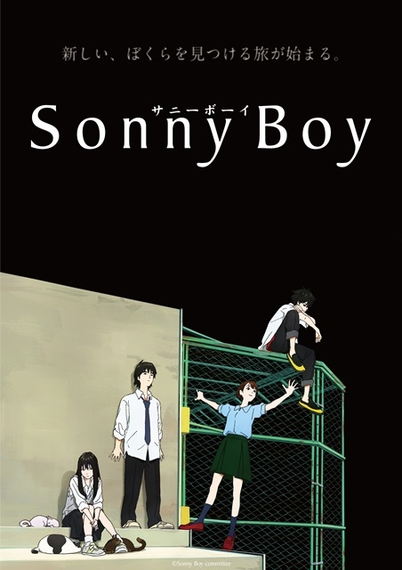

2021.7 动画推荐
主观判断警告!
本文纯粹出于笔者个人主观经验与感受而成，如有任何不同意见欢迎友善交流讨论
没有提到的作品笔者没看，或不符合笔者个人兴趣，或观看价值较低
另外，本文不提供动画简介，对感兴趣的动画可以点击「更多信息」访问Bangumi 番组计划网站的详情页面
小林さんちのメイドラゴンS（小林家的龙女仆s）

推荐度：90分
京都出品，必属精品。同第一季一样，依然是温馨轻松的日常动画，画风清新精致，剧情轻松活泼，适合日常萌系爱好者。
更多信息：小林さんちのメイドラゴンS | Bangumi 番组计划
关键词：日常，玄幻，治愈，美少女，京都动画，轻百合
人偶学园

推荐度：90分
米哈游制作的崩坏三衍生动画，泡面番，剧情极其沙雕有趣，如果不了解崩坏三趣味会下降很多，有时可能连笑点都无法理解，优质的粉丝向作品。
更多信息：人偶学园 | Bangumi 番组计划
关键词：搞笑，崩坏3rd，泡面，国产
Sonny Boy -サニーボーイ-（漂流少年）

推荐度：85分
一场奇幻的漂流历险记，学生们获得了各种不同的超能力，各自的日常生活也全都被打乱。故事中的不同人物在漂流中都表达了不同的人生哲学，是一部值得思考回味的动画作品，推荐。
更多信息：Sonny Boy -サニーボーイ- | Bangumi 番组计划
关键词：奇幻，成长，哲学
海賊王女（海贼王女）

可推荐度：80分
本来应该是10月的动画，但是北美地区先行开播了，所以当时在crunchyroll网站上可以看到最新的带英文字幕的海贼王女。本作有优良的作画和音乐，打斗动作流畅，人设也很不错，轻微乙女向。然而后续的剧情发展有点不是那么有趣。
更多信息：海賊王女 | Bangumi 番组计划
关键词：原创，战斗，冒险
乙女ゲームの破滅フラグしかない悪役令嬢に転生してしまった…Ｘ（转生成为了只有乙女游戏破灭Flag的邪恶大小姐 第二季）

推荐度：75分
单纯的沙雕动画，所谓的暗魔法，皇室贵族内斗全是像过家家一样，声优阵容极其豪华，真扎，小水，松冈，美宝林…
问题是女主过于迟钝，甚至是过于傻了，第一季看完第二季依然是这样，有点审美疲劳了。
更多信息：乙女ゲームの破滅フラグしかない悪役令嬢に転生してしまった…Ｘ | Bangumi 番组计划
关键词：搞笑，乙女，逆后宫
白い砂のアクアトープ（白沙水族馆）

推荐度：75
慢节奏日常动画，讲述退役偶像和一个海洋生物爱好者少女在水族馆工作的故事，剧情几乎毫无波澜，就是平平淡淡的打工日常。
更多信息：白い砂のアクアトープ | Bangumi 番组计划
关键词：日常，轻百合，打工
100万の命の上に俺は立っている 第2シーズン（我立于百万生命之上 第二季）

推荐度：75
制作过于贫穷，但是剧情相对还不错，主角没有特别脱离一般常识的操作，男主非龙傲天，比较有担当，其他几个队友也并非都是花瓶，其中的花瓶队友也在缓慢地成长。本作比同期的「侦探已死」，「精灵幻想记」之类的画面精良但是剧情烂的动画要好上太多了，可以看一看。
更多信息：100万の命の上に俺は立っている 第2シーズン | Bangumi 番组计划
关键词：异世界，战斗
ジャヒー様はくじけない（迦希女王不会放弃）

推荐度：75分
迦希女王失去力量变成幼女体型，但是又能暂时通过魔石恢复成年身材（像奥特曼一样），两个愿望同时满足。虽然迦希女王一直喊着要复兴魔界，但事实上主线还是讲迦希女王过着贫穷的生活，天天去居酒屋打工，每天都要各种吃瘪的故事。登场人物全部都是女性，不知道的还以为是芳文社的动画（并不是），典型的废萌作，基本没有主线，人物画得很可爱，喜欢废萌的可以一看。
更多信息：ジャヒー様はくじけない！ | Bangumi 番组计划
关键词：废萌，日常
出会って5秒でバトル（见面5秒开始战斗）

推荐度：65分
制作太过于贫穷，就剧情而言，前半段的智斗还是挺有意思的，但是后半段女主加入之后智斗的成分就显得无趣了很多，再加上作画的各种崩坏，相当劝退。原本男主的能力还是很有意思的，在前半部分的几集中也确实让人感受到「智」的成分，可惜越往后剧情质量越差，最后烂尾了。
更多信息：出会って5秒でバトル | Bangumi 番组计划
关键词：战斗，大逃杀，智斗